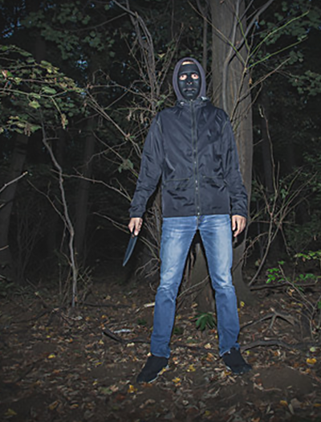
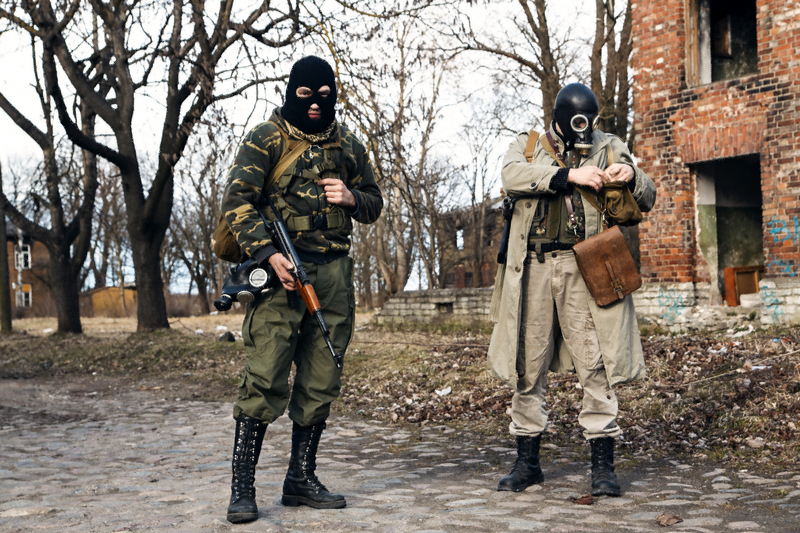

|
 
 |
We are a hunting party called "The Prey". We began as a group of enthusiastic animal hunters. However, there is only so long you can hunt for sport before you crave something greater. Naturally we first turned to hunting in other countries, such as tiger hunting in Russia, Elephants in Africa, etc. but the thrill loses its luster quickly. In time we found our largest issue was that nothing we hunted posed a real challenge. But if there was a way we could create a true cat and mouse game that issue would be no longer, and in turn it'd spawn the greatest hunting sport. Better than that, this was a hunt without expensive trips or equipment. And we're not trying to keep hunters out we are actually looking for people to join us on our monthly hunting trips! All we ask is that you share the same desire to be truly challenged by your prey. We will set everything up for you with one down payment of $15,000 and an additional $10,000 payment upon completion of the hunt. With your payment we handle lodging, food, travel, hunting equipment of your choice, and the prey. You don't have to do anything but show up. The women we select are the kinds who are already invisible to society: Prostitutes, homeless, orphans, and others of the same ilk that will not be missed. All of the prey used are in good physical condition and mental state to inspire the best overall challenge. Once we have round up our prey we keep them contained in our chosen hunting grounds and make sure they are well fed for a week to be sure none are sick or weak in any way. They're then released onto the grounds with a short head start and we spend the next three to seven days hunting them. It is the most challenging hunt you will ever be a part of. If this sounds like the missing piece to your hunting experience and you can relate to our desire to be challenged, please apply through the email below. We will place you through a screening test and if you pass WE will contact YOU with further details. Hunts are organized in such a way to ensure you find success. Whether that comes from tracking down your prey on foot, stationing near engineered hotspots, or partnering up with an expert to assist in achieving your killing blow, it's all up to you. No matter the choice your payment will guarantee a way to experience all parts of a hunting trip unlike any other. With all that said $25,000 is a small price to pay to feel the most alive you've ever felt, no? Join us? 
join@kv8wtvliaskrk8bha381139.ann |